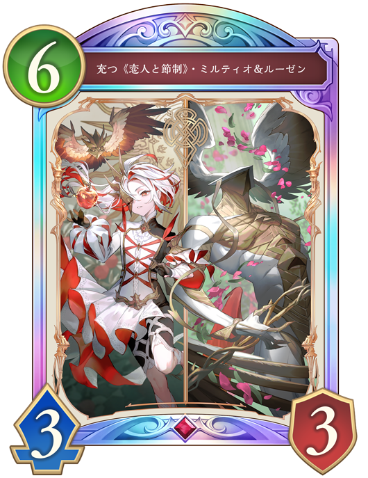
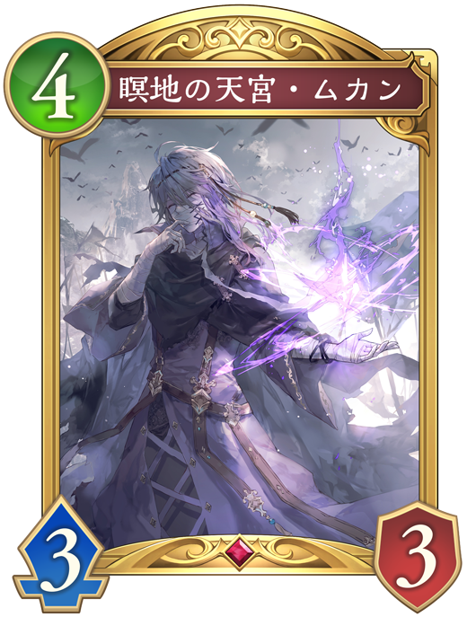
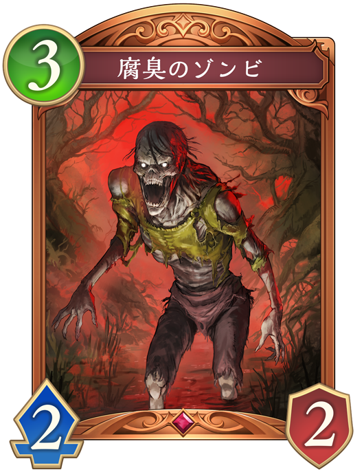
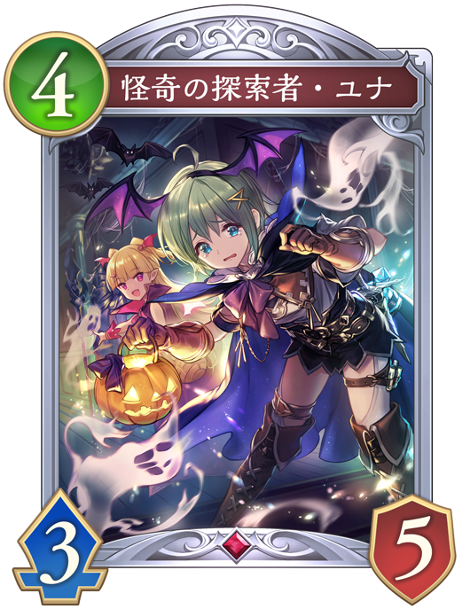

自分の連携は13で進化回数は2回で、手札の「十天衆の頭目・シエテ」と「天使長の後継・サンダルフォン」の解放奥義は10である。

運命の黄昏・オーディン自分の体力が13点と少ないため盤面を取られながら進化してリーダに7点ダメージを受けてしまい、そのまま押し切られてしまう。

全一の王・ベルゼバブ自分の受けるダメージが+1され、「新約黒の章」や「破壊の継承者・アクシア」などのダメージが大きくなってしまう。 最高打点が増え、不利になる。

破壊の団結者盤面を破壊されてしまうが、リーダーへのダメージは少なく相手の盤面も強くならないため危険性は低い。

怪奇の探索者・ユナラストワードで「ゴースト」と「バット」の2枚が手札に加わるうえに、スタッツが高く、守護も持っている。 更に、「充つ《恋人と節制》・ミルティオ&ルーゼン」のクレストが付与された後、どちらも進化し3点疾走と3ドレインとなり、ゲーム後半が不利になる。
ミルティオナイトメアは「充つ《恋人と節制》・ミルティオ&ルーゼン」のクレストによる自動進化を活かしたデッキで、手札の疾走フォロワーで打点を作り攻めてくる。
この状況では相手は後攻6ターン目でそのターンから超進化が使える為、「充つ《恋人と節制》・ミルティオ&ルーゼン」がプレイされる可能性が高い。
「充つ《恋人と節制》・ミルティオ&ルーゼン」はファンファーレでリアニメイト2と4をし、進化したときに場の他のフォロワーからランダム6枚を破壊するため、リソースを温存して対応していくことが有効である。
 「麗金花・ウンケイ」を出して、ファンファーレで消滅させる。
「麗金花・ウンケイ」を出して、ファンファーレで消滅させる。
「充つ《恋人と節制》・ミルティオ&ルーゼン」はファンファーレでリアニメイト2と4をするため、相手の「怪奇の探索者・ユナ」を消滅させることでリアニメイトの対象を弱くさせることができる。 また、進化したときの効果で破壊されてしまうが、進化権や手札を無駄にせずに温存できる。
 「静寂のアナテマ・ギルダリア」を出して進化し、進化したときに出た突進のついた「スティールナイト」で相手のフォロワー倒して、盤面に2体残す。
「静寂のアナテマ・ギルダリア」を出して進化し、進化したときに出た突進のついた「スティールナイト」で相手のフォロワー倒して、盤面に2体残す。
「静寂のアナテマ・ギルダリア」と「スティールナイト」がダメージを受けずに盤面に残って良い選択のように思えるが、「充つ《恋人と節制》・ミルティオ&ルーゼン」の進化したときの効果で簡単に破壊されてしまう。 「静寂のアナテマ・ギルダリア」は連携20を超えるとファンファーレで超進化するため、いざという時まで取っておきたいカードである。 基本的に進化して使うカードである為、進化権も使ってしまい、この場面で使うのは得策ではない。
 「蒼い空を征く騎空士・グラン&ジータ」のモード1（相手の場のフォロワーからランダム1枚に5ダメージ）を選んで出す。
「蒼い空を征く騎空士・グラン&ジータ」のモード1（相手の場のフォロワーからランダム1枚に5ダメージ）を選んで出す。
「蒼い空を征く騎空士・グラン&ジータ」のファンファーレで進化権を使わずにフォロワーを破壊することができる。 手札も1枚しか使わず、リソースを温存できている。
 「干絶の顕現・ギルネリーゼ」を出して、ファンファーレと進化時で相手のフォロワーを選択して倒す。残った3PPで「颶風の天業・グリームニル」を出す。
「干絶の顕現・ギルネリーゼ」を出して、ファンファーレと進化時で相手のフォロワーを選択して倒す。残った3PPで「颶風の天業・グリームニル」を出す。
このプレイでは、盤面を作り相手のフォロワーも取れた上に「颶風の天業・グリームニル」のクレストも付与でき,この選択肢が1番良いように思えるが実際は違う。 「干絶の顕現・ギルネリーゼ」はドレインを持っており、この対面では自動進化した疾走で削られたリーダーの体力を回復するために使いたい。 また、手札2枚を使って作った盤面も「充つ《恋人と節制》・ミルティオ&ルーゼン」の進化したときの効果で簡単に破壊されてしまう。
「充つ《恋人と節制》・ミルティオ&ルーゼン」はファンファーレのリアニメイトで墓場から2体場に出してくるため、ラストワードで手札を増やす「怪奇の探索者・ユナ」を消滅させることは、相手のリソースとリアニメイトの対象を減らせて有利になる。
また、進化したときに、場の他のフォロワーからランダム6枚を破壊するため、無駄な盤面展開はせず、返しに強い盤面を作ることが大切である。
「干絶の顕現・ギルネリーゼ」は回復で、「静寂のアナテマ・ギルダリア」はその後の強い盤面展開で使いたいので温存して、このターンは最小限のリソースで凌ぐのがベストです。